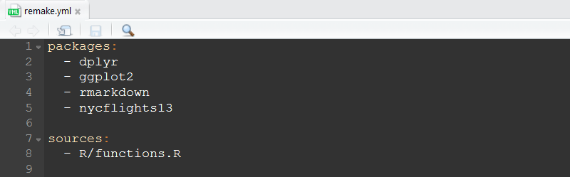
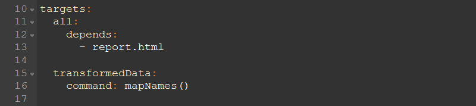
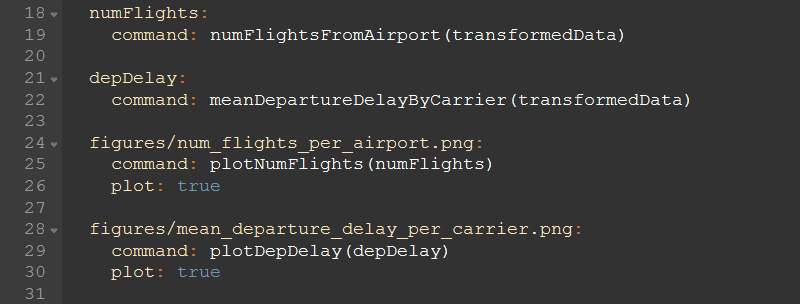

Effective Data Analysis Pipelines in R
Nathan Eastwood
Effective Data Analysis Pipelines in R
About Me
- BSc Mathematics and Statistics - Plymouth University
- MSc Statistics - Sheffield University
- Worked as a statistician for C3 Resources and Plymouth University
- Currently work as a R / data science consultant for Mango Solutions
Agenda
- Reproducible workflows
- Process consistency
- Introducing
remake
Single File Analyses
|- ProjectName/
|- data/
|- output/
|- run.R
|- README.md
Multiple Files Analyses
|- ProjectName/
|- data/
| |- raw/
| |- cleaned/
| |- prepared/
|- output/
| |- fig/
| |- results/
|- lib
| |- source.R
| |- explore.R
| |- prepare.R
| |- model.R
| |- evaluate.R
| |- utils.R
|- run.R
|- README.md
Problems
- Not scalable
- Undocumented dependencies
- Data can change
- When it does - which parts of the analysis will need re-running?
- Manually re-running analyses is prone to error
remake
remake is “Make-like build management, reimagined for R”
remake allows you to:
- Change parts of your workflow and only update what changed
- Make your workflow reproducible since it incorporates the data importing, analysis and reporting in the same pipeline
- Note:
remake is in active development
remake Components
- “Targets”: Objects of interest
- “Rules”: Functions returning targets
- “Dependencies”: Upstream targets
remake Components - The YAML File
- The yaml file tells
remake everything that it needs to know.
- It is the “map” of your analysis
Example
nycflights13 (install.packages("nycflights13"))
- contains information about all flights that departed from NYC in 2013
- 336,776 flights in total
- This example uses the datasets:
flights, airports, airlines
- I want to generate a report with
- The number of flights from each airport each month
- The mean departure delay per airline each month
The YAML File - Packages and Source Files
- At the start, write:
- the packages you need to load
- the functions you need to source

The YAML File - the Targets
- Next define the targets
- The
all target is the final output

The YAML File - the Targets
- Now we run the functions on the transformed data and produce the graphics

The YAML File - the Targets
- Finally, we create the output

Visualising Your Workflow
remake uses the DiagrammeR package to visualize your workflows!- You can diagram your whole pipeline using the
diagram() function from remake.
Visualising Your Workflow
Running the Analysis
- Running
remake::make() will produce the following output:
> remake::make()
[ LOAD ]
[ READ ] | # loading sources
< MAKE > all
[ BUILD ] transformedData | transformedData <- mapNames()
[ READ ] | # loading packages
Joining, by = "carrier"
[ BUILD ] numFlights | numFlights <- numFlightsFromAirport(transformedData)
[ BUILD ] depDelay | depDelay <- meanDepartureDelayByCarrier(transformed...
[ PLOT ] figures/num_flights_per_airport.png | plotNumFlights(numFlights) # ==> figures/num_flights_per_airport...
[ PLOT ] figures/mean_departure_delay_per_carrier.png | plotDepDelay(depDelay) # ==> figures/mean_departure_delay_per_ca...
[ BUILD ] report.html | render("report.Rmd")
...
[ ----- ] all
Re-running the Analysis
> remake::make()
< MAKE > all
[ OK ] transformedData
[ OK ] numFlights
[ OK ] depDelay
[ OK ] figures/num_flights_per_airport.png
[ OK ] figures/mean_departure_delay_per_carrier.png
[ OK ] report.html
[ ----- ] all
Summary - key messages
- Consistency in your processes
- Consistency in analysis quality
- Reproducibility
- Reusability
- Single and multi-file analyses are not scalable
- They do not track dependencies well
- It can be difficult to know which functions to run and in what order
remake (or similar) can handle these issues for you
 Rich Fitz John
Rich Fitz John